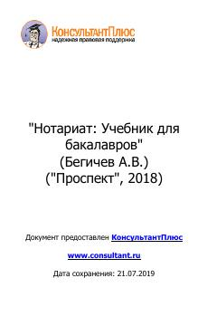

НУRossiya notariat tizimi va uning huquqiy asoslari bo'yicha bakalavrlar uchun mo'ljallangan darslik.
Ushbu darslik Rossiya Federatsiyasida notariat institutining huquqiy asoslari, tashkil etilishi va faoliyat yuritish tartibini yoritib beradi. Kitob yuridik fakultet talabalari uchun mo'ljallangan bo'lib, notarial harakatlar va huquqiy tartibga solishning zamonaviy muammolarini tahlil qiladi.